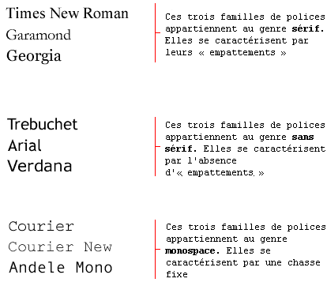
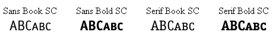
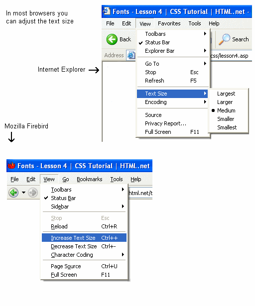

Leçon 4 : Les polices
Dans cette leçon, vous apprendrez ce que sont les polices et comment les appliquer avec CSS. Nous étudierons également comment contourner le problème des polices spécifiques choisies pour un site Web qui ne sont visibles que si elles sont installées sur l'ordinateur utilisé pour accéder au site Web. Les propriétés CSS suivantes seront décrites :
La famille de polices [font-family]
La propriété font-family sert à indiquer la liste prioritaire des polices à utiliser pour l'affichage d'un élément donné
ou d'une page Web. Si la première police de la liste n'est pas disponible sur l'ordinateur utilisé pour accéder au site,
la police suivante est essayée et ainsi de suite jusqu'à ce qu'il y en ait une qui convienne.
Il y a deux types de noms pour catégoriser les polices : les noms de familles et les familles génériques. Les deux termes sont expliqués ci-dessous.
- Le nom de famille
- Comme exemples de noms de familles (souvent appelées « polices »), on trouve "Arial", "Times New Roman" ou "Tahoma".
- La famille générique
- On peut décrire les familles génériques comme des groupes de noms de familles ayant des aspects uniformes. Un exemple est celui de la famille sans sérif, qui est un ensemble de polices sans « empattement ».
On peut illustrer cette différence comme ceci :

Lorsqu'on liste des polices pour un site Web, on commence naturellement par la police préférée suivie par des polices de remplacement. Il est recommandé de terminer la liste par une famille générique. Ainsi, la page s'affichera au moins avec une police de la même famille si aucune des polices indiquées n'était disponible.
Un exemple de liste prioritaire de polices ressemblerait à ceci :
h1 {font-family: arial, verdana, sans-serif;}
h2 {font-family: "Times New Roman", serif;}
Les titres marqués par des éléments <h1> s'afficheront dans la police "Arial". Si elle n'est pas installée
dans l'ordinateur de l'utilisateur, la police "Verdana" sera utilisée à la place. Si ces deux polices sont indisponibles,
les titres s'afficheront dans une police de la famille sans-serif.
Remarquez que le nom de la police "Times New Roman" contient des espaces, et elle est donc listée entre des guillemets.
Le style des polices [font-style]
La propriété font-style définit si le style de la police concernée doit être normal,
italic ou oblique. Dans l'exemple à suivre, tous les titres balisés par des
éléments <h2> s'afficheront en italiques.
h1 {font-family: arial, verdana, sans-serif;}
h2 {font-family: "Times New Roman", serif; font-style: italic;}
Les variantes de polices [font-variant]
La propriété font-variant sert à choisir entre les variantes normal ou small-caps
(N.d.T. petites capitales) d'une police. Une police small-caps utilise des lettres en capitales de taille réduite
à la place des lettres en minuscules. Embrouillé ? Étudiez ces exemples :

Si la propriété font-variant vaut small-caps et qu'aucune police en petites capitales n'est disponible,
le navigateur affichera très probablement le texte en capitales à la place.
h1 {font-variant: small-caps;}
h2 {font-variant: normal;}
La graisse des polices [font-weight]
La propriété font-weight décrit avec quel degré de graisse (ou de « noir ») présenter la police. Elle peut avoir
une graisse normal ou bold (N.d.T. caractères gras). Certains navigateurs permettent même
d'utiliser des nombres entre 100 et 900 (les centaines) pour décrire la graisse de la police.
p {font-family: arial, verdana, sans-serif;}
td {font-family: arial, verdana, sans-serif; font-weight: bold;}
Le corps des polices [font-size]
Le corps d'une police se règle par la propriété font-size.
On peut choisir parmi beaucoup d'unités différentes (par exemple, pixels et pourcentages) pour décrire les corps des polices. Dans ce tutoriel, nous nous concentrerons sur les unités les plus courantes et appropriées. Les exemples comprennent :
h1 {font-size: 30px;}
h2 {font-size: 12pt;}
h3 {font-size: 120%;}
p {font-size: 1em;}
Il existe une différence essentielle entre les quatre unités précédentes. Les unités « px » et « pt » font que le corps de la police est absolu, tandis que « % » et « em » permettent à l'utilisateur de l'ajuster si nécessaire. Beaucoup d'utilisateurs ont des handicaps, sont âgés ou simplement pâtissent d'une mauvaise vue ou de la piètre qualité de leur moniteur. Pour rendre votre site Web accessible à tous, vous devriez utiliser des unités ajustables telles que « % » ou « em ».
Voici une illustration de la façon d'ajuster la taille du texte dans Mozilla Firefox et dans Internet Explorer. Essayez vous-même (super, n'est-ce pas ?)

Concision [font]
Avec la propriété raccourcie font, il est possible de couvrir toutes les différentes propriétés de police en un coup.
Par exemple, prenons ces quatre lignes de code servant à décrire les propriétés de police de <p> :
p {
font-style: italic;
font-weight: bold;
font-size: 30px;
font-family: arial, sans-serif;
}
Avec la propriété raccourcie, on peut simplifier le code :
p {
font: italic bold 30px arial, sans-serif;
}
L'ordre des valeurs de la propriété font est le suivant :
font-style | font-variant | font-weight | font-size | font-family
Résumé
Vous venez d'apprendre quelques-unes des possibilités liées aux polices. Rappelez-vous que l'un des avantages majeurs de CSS pour définir les polices est que vous pouvez, à tout moment, changer les polices d'un site Web entier. CSS fait gagner du temps et facilite la vie. Dans la leçon suivante, nous verrons le texte.